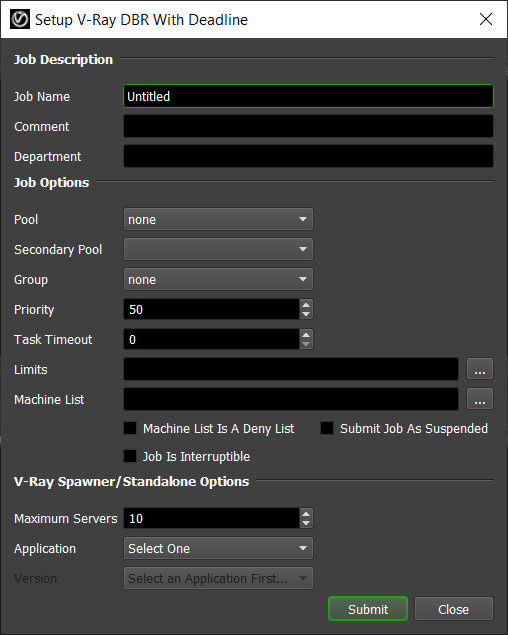
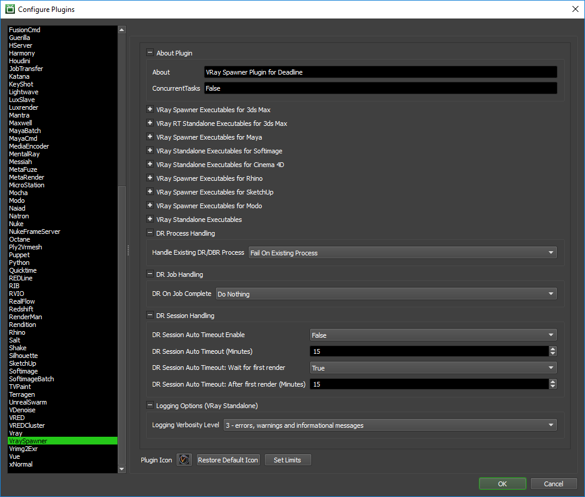

V-Ray Distributed Rendering¶
For information on newer V-Ray Swarm, navigate to our V-Ray Swarm documentation.
Interactive Distributed Rendering¶
You can submit interactive V-Ray DBR jobs from 3ds Max, Maya, Rhino, or Softimage. The instructions for installing the integrated submission script can be found further down this page.
The interactive submitter will submit a V-Ray Spawner job (V-Ray Standalone for Maya, Softimage, 3dsMaxRT, Rhino, Sketchup) to reserve render nodes, and the submitter will automatically update the V-Ray server list.
Do NOT execute or install the Chaos Group V-RaySpawner (V-RaySpawner/V-RaySpawner RT/V-Ray Standalone) executable as a background service (NT service/daemon). Deadline is more flexible here and will spawn the V-RaySpawner/Standalone executable as a child process of the Deadline Worker. This makes our system more flexible and resilient to crashes as when we terminate the V-Ray DBR job in the Deadline queue, the Deadline Worker application will ‘cleanly’ tidy up V-RaySpawner/Standalone and more importantly, any DCC application (3dsMax/Maya) or Standalone instances which it in turn has spawned as a child process. This can be helpful if V-Ray DBR becomes unstable and a user wishes to reset the system remotely. You can simply re-queue or delete/complete the current DBR job or re-submit.


Port Configuration¶
Here is a consolidated list of port requirements for the various versions of V-Ray. Ensure any applicable firewalls are opened to allow pass-through communication. Typically if in doubt, opening TCP/UDP ports in the range: 20200-20300 will cover all V-Ray implementations for DBR. During initial testing, it is recommended to open all ports in this range, verify and then consider tightening up security.
Protocol |
Default Port Number |
Application |
Notes |
|---|---|---|---|
TCP/IP |
20204 |
3dsMax V-Ray Production |
V-Ray 2.x, V-Ray 3.x - Production and Nightly beta builds (v2 & v3: 20204) |
TCP/IP |
FIXED |
3dsMax / V-Ray Spawner |
Used by render servers to broadcast a message that they are ready to join an ongoing DR session (v2 & v3: 20205) |
TCP/IP |
20206 |
3dsMax V-Ray RT/GPU |
V-Ray 2.x, V-Ray 3.x RT/GPU - Production and Nightly beta builds (v2 & v3: 20206) |
TCP/IP |
20207 |
Maya |
V-Ray 2.x and 3.x RT/GPU - Production and Nightly beta builds |
TCP/IP |
20207 |
Softimage |
V-Ray 2.x and 3.x - Production |
TCP/IP |
20207 |
modo |
V-Ray Standalone |
TCP/IP |
20207 |
Rhino |
V-Ray Standalone |
TCP/IP |
20207 |
SketchUp |
V-Ray Standalone |
TCP/IP |
20207 |
C4D |
V-Ray Standalone |
TCP/IP |
20207 |
Standalone |
V-Ray Standalone |
Submission Options¶
The general Deadline options are explained in the Job Submission documentation. The V-Ray DBR specific options are:
Maximum Servers: The maximum number of V-Ray Servers to reserve for distributed rendering.
Port Number (Softimage/Maya/3dsMax/3dsMaxRT only): The port number that V-Ray will use for distributed rendering. In the case of Softimage, this is necessary because Softimage uses V-Ray Standalone for distributed rendering and the default port number for V-Ray in Softimage is different from the default port number in V-Ray Standalone. The port number needs to be identical on all machines including the workstation machine for a particular DCC application to communicate correctly. It is recommended to disable any client firewall whilst initial testing/configuration is carried out. Typically, opening TCP/UDP ports in the range: 20200-20300 will cover all V-Ray implementations for DBR.
Use Server IP Address instead of Host Name: If checked, the Active Servers list will show the server IP addresses instead of host names.
Automatically Update Server List (3dsMax only): This option when un-checked stops the automatic refresh of the active servers list based on the current Deadline queue.
Complete Job After Render (3dsMax only): When checked, as soon as the DR session has completed (max quick render finished), then the Deadline job will be marked as complete in the queue.
Active Servers (3dsMax only): Individual Deadline Workers can be enabled/disabled here (V-Ray Spawner as a job will still continue to run on the disabled Workers until the job is deleted/completed/suspended).
Check ALL/INVERT/Check NONE (3dsMax only): Easily enable all/invert/none all currently listed Deadline Workers in the Active Servers List.
Rendering¶
After you’ve configured your submission options, press the Reserve Servers button to submit the V-Ray Spawner job. The job’s ID and Status will be tracked in the submitter, and as nodes pick up the job, they will show up in the Active Servers list. Once you are happy with the server list, press Start Render (3ds Max and Maya) or Render Current Pass/Render All Passes (Softimage) to start distributed rendering.
Note that the V-Ray Spawner/V-Ray Standalone process can sometimes take a little while to initialize. This means that a server in the Active Server list could have started the V-Ray Spawner, but it’s not fully initialized yet. If this is the case, it’s probably best to wait a minute or so after the last server has shown up before pressing Start Render.
Update Servers (3dsMax only) button will manually update the Active Servers List. Note, if you modify the Maximum Servers value, the job’s frame range will be updated when this button is pressed or if “Automatically Update Server List” is enabled.
After the render is finished, you can press Release Servers or close the submitter UI (Setup V-Ray DBR With Deadline) to mark the V-Ray Spawner/V-Ray Standalone job as complete so that the render nodes can move on to another job.
V-Ray Spawner/V-Ray Standalone Submission¶
You can also submit V-Ray Spawner/V-Ray Standalone jobs from the Monitor, which can be used to reserve render nodes for distributed rendering. Note, if you submit the job via the Monitor submission script, that you will need to manually configure/update your local workstation settings to point to the correct, corresponding Deadline Workers over an identical port number.
Submission Options¶
The general Deadline options are explained in the Job Submission documentation. The V-Ray DBR specific options are:
Maximum Servers: The maximum number of V-Ray Servers to reserve for distributed rendering.
Application: The application you will be initiating the distributed render from.
Version: The version of the application, if applicable.
Port Number (3dsMaxRT/Cinema4D/Maya/Modo/Softimage/Standalone only): The port number that V-Ray will use for distributed rendering. In the case of Softimage, this is necessary because Softimage uses V-Ray Standalone for distributed rendering and the default port number for V-Ray in Softimage is different from the default port number in V-Ray Standalone. The port number needs to be identical on all machines including the workstation machine for a particular DCC application to communicate correctly. It is recommended to disable any client firewall whilst initial testing/configuration is carried out. Typically, opening TCP/UDP ports in the range: 20200-20300 will cover all V-Ray implementations for DBR.
Rendering¶
After you’ve configured your submission options, press the Submit button to submit the V-Ray Spawner/V-Ray Standalone job. Note that this doesn’t start any rendering, it just allows the V-Ray Spawner/V-Ray Standalone application to start up on nodes in the farm. Once you’re happy with the nodes that have picked up the job, you can initiate the distributed render manually from within the application (ie: Rhino or Sketchup). This will likely require manually configuring your V-Ray Server list.
After the distributed render has finished, remember to mark the job as complete or delete it so that the nodes can move on to other jobs.
Plugin Configuration¶
You can configure the V-Ray Spawner/V-Ray Standalone plugin settings from the Monitor. While in power user mode, select Tools -> Configure Plugins and select the V-RaySpawner plugin from the list on the left.
V-Ray Executables
Here you can specify the executable used for rendering for the different versions of V-Ray.
DR Process Handling
Handle Existing DR/DBR Process: Only one instance of the same DR process running over the same port is possible. This option allows for Deadline to fail the task if this is the case or attempt to kill the currently running process, to allow the Deadline managed DR process to run successfully. Note, if the process is set to kill and does indeed kill a currently present process, but seems to auto-restart even after killing; then this indicates the process is already running as a service and the service will need to be stopped by your IT staff. Do NOT install as a service as Deadline can NOT support this configuration.
DR Job Handling
DR On Job Complete: If desired, you can automatically archive or delete the DR job when it completes.
DR Session Handling
If enabled, these settings control what happens when a Worker that is running V-Ray Spawner has entered an IDLE state where it is not currently partaking in a V-Ray DBR render. We define a session as the time between a V-Ray DBR render completing and the next DBR based render starting. There are additional settings to control the behaviour once at least one DBR render has taken place on a Worker.
DR Session Auto Timeout Enable: If enabled, when a DR session has successfully completed on a Worker, the task on the Worker will be marked as complete after the DR session auto timeout period in seconds has been reached (Default: False).
DR Session Auto Timeout (Minutes): This is the timeout period (Default: 15 Minutes) when a DR session will timeout and be marked as complete by a Worker. This timeout is only active prior to the first render on the Worker.
DR Session Auto Timeout: Wait for first render: If enabled, it will force at least one render to complete before Auto Timeout becomes active (Default: True).
DR Session Auto Timeout: After First Minute: This is the timeout period (Default: 15 Minutes) when a DR session will timeout and be marked as complete by a Worker. This timeout becomes active once the first render on the Worker is complete.
Logging Options
- Logging Verbosity Level: Defines the amount of information that will be printed to the standard output. Note that this is only available when using vray.exe. The levels:
- 3 - errors, warnings and informational messages4 - all output
Integrated Submission Script Setup¶
There are integrated V-Ray DBR submission scripts for 3ds Max, Maya, and Softimage. The installation process for these scripts can be found below.
You can also submit V-Ray Spawner jobs for Rhino and Sketchup from the Monitor. In this case, the render nodes will simply be reserved for DBR, and the distributed rendering process itself will have to be initiated manually from within Rhino or Sketchup.
3ds Max¶
The following procedures describe how to install the integrated V-Ray DBR submission script for 3ds Max. The integrated submission script and the following installation procedure has been tested with Max versions 2012 and later (including Design editions).
Note
Due to a maxscript bug in the initial release of 3ds Max 2012, the integrated submission scripts will not work. However, this bug has been addressed in 3ds Max 2012 Hotfix 1.
You can either run the Submitter installer or manually install the submission script.
Submitter Install¶
Run the Submitter Installer located at
<Repository>/submission/3dsmaxVRayDBR/Installers.
Manual Install¶
Copy the file:
[Repository]/submission/3dsmaxVRayDBR/Client/Deadline3dsmaxVRayDBRClient.mcr to [3ds Install Directory]/MacroScripts
If you don’t have a MacroScripts folder in your 3ds Max install directory, check to see if you have a
UI\Macroscriptsfolder instead, and copy the Deadline3dsmaxVRayDBRClient.mcr file there if you do.Copy the file:
[Repository]/submission/3dsmax/Client/SMTDSetup.ms to [3ds Max Install Directory]/scripts/Startup/SMTDSetup.ms
Maya¶
As of Deadline 10.0.10 the manual submission documentation and submitter installers have been updated to install both the userSetup.mel file and DeadlineMayaVRayDBRClient.mel are being installed into the user directory. This change has occurred so the submitter installer will work without requiring admin access and to ensure that all versions of Maya will use the same client script file. This should not affect any installs and is not a required update.
The following procedure describes how to install the integrated V-Ray DBR submission script for Maya. The integrated submission script and the following installation procedure has been tested with Maya versions 2012 and later.
You can either run the Submitter installer or manually install the submission script.
Submitter Install¶
Run the Submitter Installer located at
<Repository>/submission/MayaVRayDBR/Installers.
Manual Install¶
On Windows, copy the file:
[Repository]\submission\MayaVRayDBR\Client\DeadlineMayaVRayDBRClient.mel to [My Documents]\maya\scripts
If you do not have a userSetup.mel in
[My Documents]\maya\scripts, copy the file[Repository]\submission\MayaVRayDBR\Client\userSetup.melto[My Documents]\maya\scripts. If you have a userSetup.mel file, add the following line to the end of this file:if( startsWith( `whatIs DeadlineMayaVRayDBRClient`, "Mel procedure found in" ) ){ DeadlineMayaVRayDBRClient(); }else{ warning( "DeadlineMayaVRayDBRClient either has errors or has not been installed." ); }On macOS, copy the file:
[Repository]/submission/MayaVRayDBR/Client/DeadlineMayaVRayDBRClient.mel to /Users/[USERNAME]/Library/Preferences/Autodesk/maya/scripts
If you do not have a userSetup.mel in
/Users/[USERNAME]/Library/Preferences/Autodesk/maya/scripts, copy the file[Repository]/submission/MayaVRayDBR/Client/userSetup.melto/Users/[USERNAME]/Library/Preferences/Autodesk/maya/scripts. If you have a userSetup.mel file, add the following line to the end of this file:if( startsWith( `whatIs DeadlineMayaVRayDBRClient`, "Mel procedure found in" ) ){ DeadlineMayaVRayDBRClient(); }else{ warning( "DeadlineMayaVRayDBRClient either has errors or has not been installed." ); }On Linux, copy the file:
[Repository]/submission/MayaVRayDBR/Client/DeadlineMayaVRayDBRClient.mel to /home/[USERNAME]/maya/scripts
If you do not have a userSetup.mel in
/home/[USERNAME]/maya/scripts, copy the file[Repository]/submission/MayaVRayDBR/Client/userSetup.melto/home/[USERNAME]/maya/scripts. If you have a userSetup.mel file, add the following line to the end of this file:if( startsWith( `whatIs DeadlineMayaVRayDBRClient`, "Mel procedure found in" ) ){ DeadlineMayaVRayDBRClient(); }else{ warning( "DeadlineMayaVRayDBRClient either has errors or has not been installed." ); }
Verify Install¶
The next time Maya is started, a Deadline shelf should appear with an orange button that can be clicked on to launch the submitter.
If you don’t see the Deadline shelf, it’s likely that Maya is loading another userSetup.mel file from somewhere. Maya can only load one userSetup.mel file, so you either have to configure Maya to point to the file mentioned above, or you have to modify the file that Maya is currently using as explained above. To figure out which userSetup.mel file Maya is using, open up Maya and then open up the Script Editor. Run this command:
whatIs userSetup.mel
Rhino¶
The following procedure describes how to install the integrated V-Ray DBR submission script for Rhino. The integrated submission script and the following installation procedure has been tested with Rhino 5.
You can either run the Submitter installer or manually install the submission script.
Submitter Install¶
Run the Submitter Installer located at
<Repository>/submission/RhinoVRayDBR/Installers.
Manual Install¶
The following installation procedure is intended and has been tested for Rhino 5.0.
In Rhino, select ‘Tools’ -> ‘Toolbar Layout’.

Select the Toolbar Collection file that you want to add the Deadline V-Ray DBR submission button to, and then select ‘File’ -> ‘Import Toolbars…’. Browse to
[Repository]\submission\RhinoVRayDBR\Client\and select the ‘deadlineVRayDBR.rui’ file.Check the box next to ‘Deadline V-Ray DBR’ and press ‘OK’.
There should now be a toolbar with a Deadline V-Ray DBR button on your screen, which you can dock anywhere you want.
Softimage¶
The following procedure describes how to install the integrated V-Ray DBR submission script for Softimage. The integrated submission script and the following installation procedure has been tested with Softimage versions 2012 and later.
You can either run the Submitter installer or manually install the submission script.
Submitter Install¶
Run the Submitter Installer located at
<Repository>/submission/SoftimageVRayDBR/Installers.
Manual Install¶
Copy the file:
[Repository]/submission/SoftimageVRayDBR/Client/DeadlineSoftimageVRayDBRClient.py to the folder [Softimage Install Directory]/Application/Plugins
Verify Install¶
Launch Softimage. The submission script is automatically installed when Softimage starts up. To make sure the script was installed correctly, select the Render toolbar on the left and click the Render button. A Setup V-Ray DBR With Deadline menu item should be available.

FAQ¶
Is V-Ray Distributed Rendering (DBR) supported?
Yes. A special ‘reserve’ job is submitted that will run the V-Ray Spawner/V-Ray Standalone process on the render nodes. Once the V-Ray Spawner/V-Ray Standalone process is running, these nodes will be able to participate in distributed rendering.
Which versions of V-Ray DBR are supported?
V-Ray DBR interactive rendering is supported for 3ds Max, Maya, and Softimage 2012-2015. You can also submit V-Ray Spawner jobs for Rhino and Sketchup from the Monitor. In the latter case, the render nodes will simply be reserved for DBR, and the distributed rendering process itself will have to be initiated manually from within Rhino or Sketchup. Finally, V-Ray Standalone is supported for Cinema 4D and V-Ray Standalone itself.
V-Ray Worker or V-Ray Spawner application fails to start manually?
During initial configuration of V-Ray DBR & any future debugging, it is recommended to disable any firewall & anti-virus software at both the DBR master host machine as well as all render Worker machines which are intended to participate in the DBR render. We suggest you manually get V-Ray DBR up and running in your studio pipeline to verify all is well before then introducing Deadline as a framework to handle the Spawner/Slave process.
Is Backburner required for 3dsMax based V-Ray DBR rendering via Deadline?
Yes. Normal 3dsMax rendering via Deadline requires the Backburner dll’s to be present on a system and this is the same prerequisite for V-Ray DBR rendering to work correctly. Ensure you have the latest/corresponding version of Backburner to ensure it supports the version of 3dsMax you are using. You can submit a normal 3dsmax render job to verify that Backburner & 3dsMax rendering via Deadline are all operating correctly before attempting to configure V-Ray DBR rendering. Use the Deadline job report to verify the correctly matched version of Backburner, 3dsMax are in order.
3dsmax.exe starts (via vrayspawnerYYYY.exe) in the taskbar (minimized) but then instantly disappears?
V-Ray DBR rendering requires Deadline to have rendered at least one normal 3dsMax render job on the Worker machine prior to attempting DBR rendering via vrayspawnerYYYY.exe. Essentially, to test/debug if this is an issue, try to manually start the vrayspawnerYYYY.exe program from the Start menu (Start menu > Programs > Chaos Group > V-Ray for 3dsmax > Distributed rendering > Launch V-Ray DR spawner). It will automatically try to find the 3dsmax.exe file and start it in server mode. You should end up with 3dsmax minimized in the task bar with the title “vraydummyYYYY.max”. If 3ds Max stays there alive without closing then V-Ray DBR is working correctly. If you see the 3ds Max window flashing on the taskbar and then instantly disappearing, right-click on the V-Ray DR spawner icon in the taskbar tray, select “Exit” to close the DR spawner application, and try submitting a regular Deadline 3dsMax render job with this machine running Deadline Worker. After that, try to start the V-Ray DR spawner again.
Do I need to run the vrayspawner (or RT/vrayslave/vray Standalone) application or install vrayspawner (or RT/vrayslave/vray Standalone) executable as a service/daemon on each machine?
No. Do NOT execute or install the Chaos Group V-RaySpawner (V-RaySpawner/V-RaySpawner RT/V-Ray Standalone) executable as a background service (NT service/daemon). Deadline is more flexible here and will spawn the V-RaySpawner/Standalone executable as a child process of the Deadline Worker. This makes our system more flexible and resilient to crashes as when we terminate the V-Ray DBR job in the Deadline queue, the Deadline Worker application will ‘cleanly’ tidy up V-RaySpawner/Standalone and more importantly, any DCC application (3dsMax/Maya) or Standalone instances which it in turn has spawned as a child process. This can be helpful if V-Ray DBR becomes unstable and a user wishes to reset the system remotely. You can simply re-queue or delete/complete the current DBR job or re-submit.
Can I force V-Ray Spawner/Slave to run over a certain control port?
Yes. Set the system environment variable VRAY_DR_CONTROLPORT to the required port number or where possible, in the case of some supported applications we expose the Port Number option in our Monitor/in-app submitters. Please consult the V-Ray User Manual for more information on TCP/IP Port Numbers.
Can I force V-Ray DBR to run over a specific port for 3dsMax?
Yes. V-Ray production renderer specifically via 3dsMax uses a TCP port (default:20204), which can be changed via the “Port Number” spinner. V-Ray RT as the renderer uses a different TCP port (default:20206). See here for more information on Port Configuration. Please consult the V-Ray User Manual for more information on TCP/IP Port Numbers. Note, the Port Number can only be controlled via the 3dsMax in-app submitter and NOT when “reserving” a V-Ray DBR job for 3dsMax via the Deadline Monitor submission script.
V-Ray DBR rendering seems a little unstable sometimes or my machine slows down dramatically!
Depending on the number of Worker machines being used (Win7 OS < 20), scene file sizes being moved around together with asset files, and your network/file storage configuration, it may help to disable your local machine from participating in the DR render process. Depending on your 3D application used and the V-Ray version, there might be a “Use local host” or “Don’t use local machine” checkbox option, which can help to reduce the load on your local machine.
Can I fully off-load 3dsMax V-Ray or Mental Ray Satellite rendering from my machine?
Yes, although please note, this is a different workflow and is supported directly in the 3dsmax plugin. See the V-Ray/Mental Ray DBR section for more information.
Can I mark ALL V-Ray ‘reserve’ jobs as completed after a render?
Yes. A number of options are available in the Plugin Configuration to automatically mark ALL DBR jobs as completed after the job has finished rendering. In the example below, we wish for ALL DBR jobs to be marked as completed after 1 minute (default is 15 minutes) has elapsed since the DBR render has finished and only after at least one DBR session has taken place.

Error Messages and Meanings¶
This is a collection of known V-Ray DBR error messages and their meanings, as well as possible solutions. We want to keep this list as up to date as possible, so if you run into an error message that isn’t listed here, please contact Deadline Support and let us know.
error: Failed to start network server: Failed to open listening port (98)
VRay.exe/vrayslave has been configured as a service/daemon on the machine generating this error message, possibly during the V-Ray/Maya install process and this is conflicting with Deadline trying to also spawn the same process on the same TCP port (default: 20207). On Linux, ensure you check the contents of the file: “/usr/autodesk/maya20##-x64/vray/bin/vrayslave” for a line entry as follows: “/usr/autodesk/maya2014-x64/vray/bin/vray.bin $* -server -portNumber=20207” where ## is the Maya version. This line entry should not be present. Note, we are unable to attach to an already running process as part of the V-Ray Spawner Plugin, hence the V-Ray executable must NOT already be running. Do NOT execute or install V-Ray as a service. Deadline is more flexible here and will spawn the executable as a child process of the Deadline Worker.

{kind=link}
{kind=link}
{kind=link}
{kind=link}
{kind=link}
{kind=link}